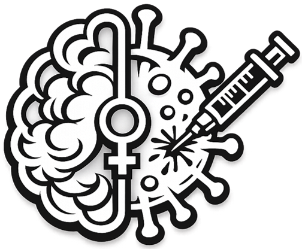
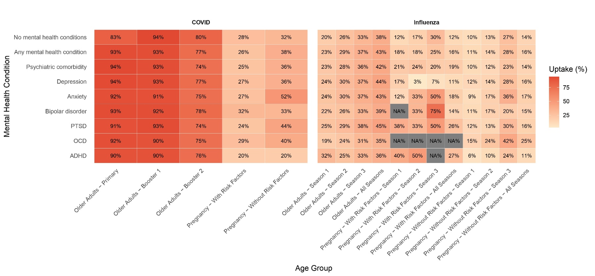
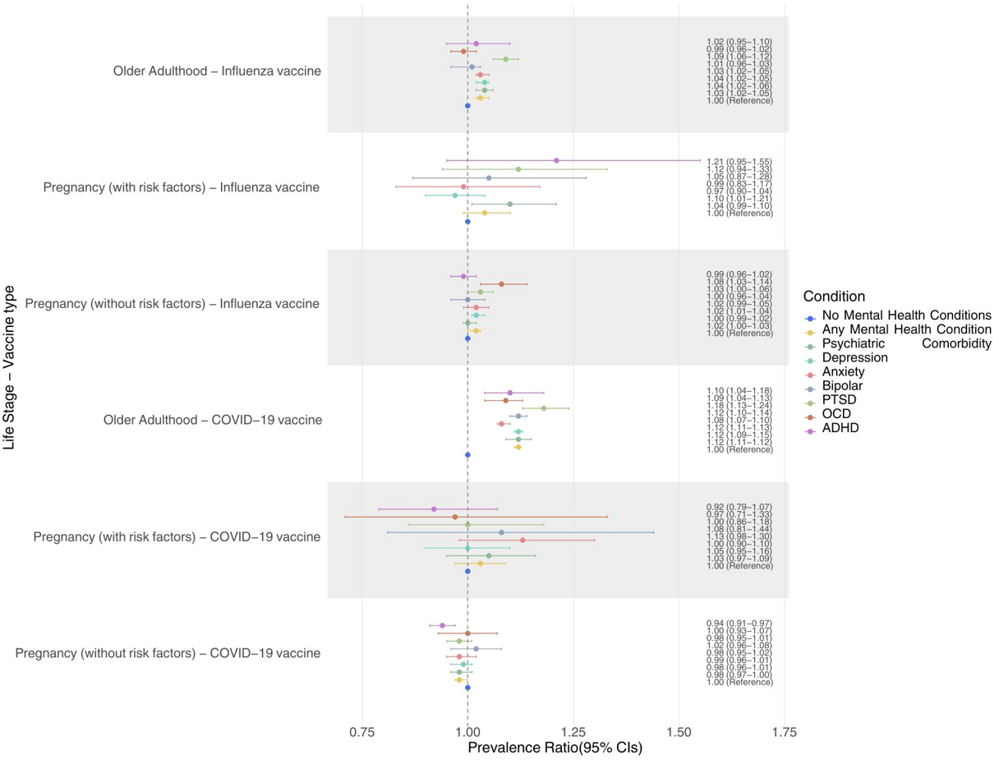

Uptake of Recommended Vaccines in Women with Mental Health Conditions: A Population-Based Study Covering Pregnancy and Older Adulthood
Mahmoud Zidan, MSc. | Oslo University Hospital
42nd Annual ISPE, Milan, Italy

TAKEHOME MESSAGE:
Mental health conditions were generally not barriers to influenza or COVID-19 vaccination among Norwegian women, although pregnant women with ADHD had lower COVID-19 vaccine uptake.
WHY IS THE STUDY NEEDED?
Seasonal influenza vaccination is recommended during pregnancy and older adulthood, while COVID-19 vaccination has been recommended for both groups during the pandemic because of their increased risk of severe disease. Mental health conditions may influence vaccine uptake through differences in healthcare utilisation, health-seeking behaviour, cognitive factors, and clinician recommendation. Previous studies have reported inconsistent associations and have generally focused on a single population or mental health condition. Whether these associations differ across life stages remains unclear. We therefore compared uptake of recommended influenza and COVID-19 vaccines among women with and without mental health conditions during pregnancy and older adulthood.
HOW DID WE ANSWER THE QUESTION?
We conducted a nationwide registry-based cohort study using linked Norwegian health registries. Separate cohorts were established for pregnant women and women aged 65 years and above. Mental health conditions were identified using diagnostic information recorded during a one-year look-back period and included depression, anxiety, ADHD, PTSD, OCD, bipolar disorder, substance use disorders, and psychiatric comorbidity. Outcomes were receipt of recommended influenza and COVID-19 vaccination. Associations were estimated using inverse probability of treatment weighting (IPTW) and modified Poisson regression to estimate weighted prevalence ratios while accounting for measured confounding.
WHAT DID WE FIND?

Fig.1 Uptake of COVID-19 and Influenza vaccines in pregnant and older adult women. Pregnant women are stratified based on the presence of risk factors for infection. Uptake of influenza vaccine is assessed per season (2016 to 2019) and in a combined at least 1 dose in any season. Uptake of COVID-19 vaccine was assessed as at least 1 dose during pregnancy (2021-2023) in pregnant women, or the uptake of primary vaccination (2 doses), a first booster, and a second booster in older adult women. NA denotes estimates where less than 5 women were vaccinated.
Among women aged 65 years or older, those with any mental health condition generally had higher uptake of the primary COVID-19 vaccine doses, while uptake of the first and second boosters was comparable to that among women without mental health conditions.
Among pregnant women, uptake of the recommended COVID-19 vaccine dose was generally similar between those with and without mental health conditions, regardless of their risk of severe infection. However, some conditions stood out: anxiety and PTSD were associated with higher uptake, whereas ADHD was associated with lower uptake.
For influenza vaccination among older adults, those with mental health conditions generally showed slightly higher vaccine uptake than those without such conditions.
Among pregnant women, the patterns were more heterogeneous across mental health conditions. PTSD was associated with higher influenza vaccine uptake, whereas ADHD was associated with lower uptake.

Fig.2 Forest plot showing weighted prevalence ratios between different mental health conditions and the uptake of Influenza and COVID-19 vaccines in pregnant and older adult women. Vaccine uptake for Influenza is defined as taking up at least one dose in any season between 2016 and 2019. For the COVID-19 vaccine, uptake is defined as taking up at least one dose in pregnancy during the study period for the pregnancy cohorts, and taking up at least 2 doses of the COVID-19 vaccine after turning 65 during the study period for older adults. Models for older adults were adjusted for the following confounders using IPTW: age at enrollment, personal annual income, region of residence, country of birth, and risk factors for severe infection. Models for pregnant women were adjusted for the following confounders using IPTW: age at enrollment, personal annual income, region of residence, country of birth, smoking, parity, and profession.
Among women aged 65 years or older, mental health conditions were generally associated with slightly higher influenza and COVID-19 vaccine uptake.
PTSD showed the strongest positive association with COVID-19 vaccination in older women (wPR 1.18, 95% CI 1.13 - 1.24).
During pregnancy, associations were generally smaller and close to the null.
Pregnant women with ADHD had lower COVID-19 vaccine uptake than women without ADHD (wPR 0.94, 95% CI 0.91 - 0.97).
Overall, associations differed by diagnosis and life stage, rather than indicating that mental health conditions as a whole were barriers to vaccination.
WHAT DO THESE FINDINGS MEAN?
Our findings suggest that mental health conditions are not universally associated with lower uptake of recommended vaccines. Among older women, higher uptake may reflect greater healthcare contact or more opportunities for vaccination. During pregnancy, differences were generally modest, although lower COVID-19 vaccine uptake among women with ADHD suggests that diagnosis-specific barriers may exist. These findings reinforce that mental health conditions should not be treated as a single homogeneous exposure when evaluating vaccination behaviour.
WHAT ARE THE STRENGTHS AND LIMITATIONS?
Strengths:
- Nationwide population-based registry study.
- Two life stages analysed using the same design.
- Broad range of mental health conditions.
- Adjustment for key sociodemographic confounders and multiple imputation.
Limitations:
- Possible exposure misclassification of mental health conditions.
- Potential underdiagnosis of ADHD in older adults.
- Underreporting of influenza vaccination before 2020.
- Psychiatric healthcare utilization and medication use were not captured.
WHY DO THESE FINDINGS MATTER?
Our results suggest that women with mental health conditions should not be considered a uniformly under-vaccinated group. Instead, differences in vaccine uptake appear to depend on the specific diagnosis and life stage. Public health strategies may therefore benefit from diagnosis-specific approaches, including targeted efforts to improve COVID-19 vaccination among pregnant women with ADHD, while continuing to leverage healthcare encounters to promote vaccination among women with mental health conditions.
HOW COULD ONE OBTAIN THE DATA USED IN THIS PROJECT?
Due to Norwegian data protection laws, individual-level data cannot be made publicly available. Data may, however, be accessed by eligible researchers following approval from the relevant data custodians, compliance with the General Data Protection Regulation (GDPR), and any required ethical or regulatory approvals. Researchers seeking access to the data for replication or other research purposes should apply through the Norwegian Health Data Access Portal (helsedata.no).